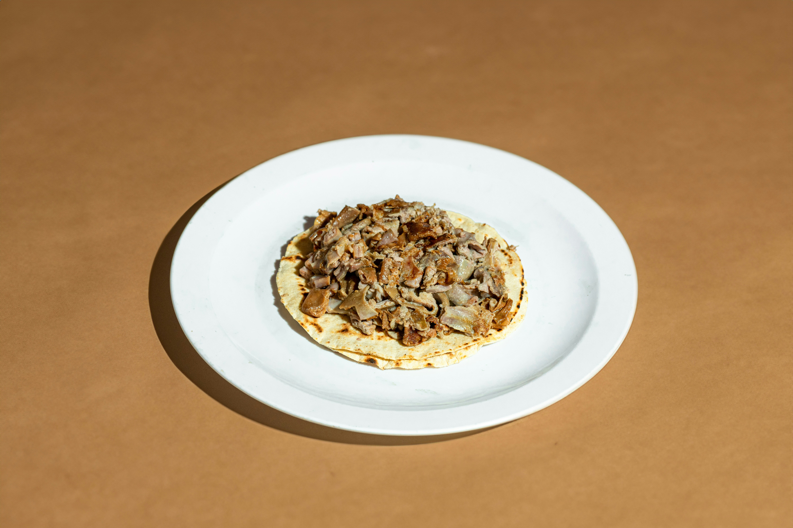

Creamy Mushroom Risotto
Description
Creamy Mushroom Risotto is a comforting Italian classic that turns humble ingredients into a rich, luxurious meal. Arborio rice slowly absorbs flavorful broth as it cooks, creating a velvety texture that's enhanced by sautéed mushrooms, butter, and Parmesan. It’s a cozy, meatless option perfect for dinner any night of the week.
Ingredients
- 1 cup Arborio rice
- 2 tbsp olive oil
- 1 small onion, finely chopped
- 2 garlic cloves, minced
- 1 cup mushrooms, sliced (cremini or button)
- 1/2 cup dry white wine (optional)
- 4 cups vegetable or chicken broth, warm
- 1/2 cup grated Parmesan cheese
- 2 tbsp butter
- Salt and pepper to taste
- Fresh parsley, chopped (for garnish)
Steps
- Heat olive oil in a pan over medium heat. Add onions and garlic; sauté until soft.
- Add mushrooms and cook until they release their moisture and brown slightly.
- Stir in Arborio rice and toast for 1-2 minutes. Add white wine and let it reduce.
- Gradually add warm broth, one ladle at a time, stirring continuously and letting the liquid absorb before adding more.
- Once the rice is creamy and tender (about 18-20 minutes), remove from heat.
- Stir in butter, Parmesan, and season with salt and pepper. Garnish with parsley.